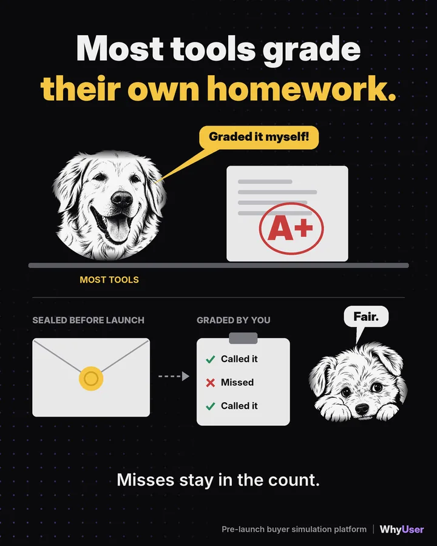
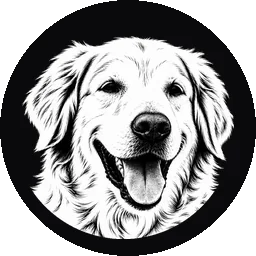
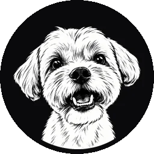
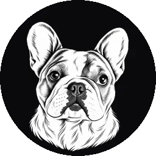

About WhyUser
A note from Durga Gokina, founder · Updated 7 November 2026
What is WhyUser?
WhyUser is pre-launch buyer simulation for B2B marketing. Think of it as a dress rehearsal for your launch, where the critics show up early and leave notes.

- Know your buyer. We build each buyer from real evidence: your site, your market, competitor reviews and, if you share them, your calls and CRM notes.
- Rehearse the launch. Your landing page, ad or email goes past a simulated buying committee. That is everyone at the company you sell to who must say yes.
- Ship the fix. You see which role stalls, why, and what to change. A page test takes about 30 minutes.
Every finding cites the buyer evidence behind it. WhyUser works in the web app, in Claude through MCP on every plan, and by API. See a sample report
Why does it exist?

In B2B, five people must say yes. Your dashboard shows one number, like a 2.4% conversion rate. It counts how many left. It can’t tell you which buyer said no, or why.

Buyers now ask AI before they talk to you. AI reads your page, builds the shortlist and sums you up. By the first sales call, your page has already made the case, for you or against you.

Engineering has staging. Ops runs dry runs. Sales runs role plays. Marketing goes live untested, with real budget and real buyers. You and AI read every word. Buyers scan and leave.


So I built the rehearsal marketing never had.
Why should you trust it?
You shouldn’t take our word for it. Happy would grade his own homework an A+, and he works here. Opinion does not move budget. Evidence does.

A real test needs four things. It is grounded in your real buyers. It uses many buyers, not one opinion. It gives the same answer each run, so a change means your fix worked. And it is graded against what really happened. Twelve questions to ask any tool, us included
So we keep score. Each claim is sealed before launch, your team grades it against what happened, and misses stay in the count. So far: 473 claims graded, 84% accurate. See how we grade
Don’t trust us. Grade us. Run WhyUser on a campaign you already know the ending to, and see if it finds what happened.
Who is it for?
Demand gen and RevOps leaders at B2B SaaS companies with 75 to 400 people. It fits best when you sell AI, dev tools, data, security or API products, and your biggest fan can’t sign the deal alone.
Customers include ngrok (read the ngrok story), Vectara and design partners under NDA.
It is not for B2C, e-commerce, or teams that want a copywriting tool.
Who is behind it?
I’m Durga Gokina, founder and CEO. I co-founded Macrometa and was Chief Architect at Atlantis Computing. I have spent 28 years in B2B, and hold an MS in computer science from IIT Bombay.
Two advisors help me. Sarah Daily advises on revenue operations. Nichole LaRue advises on go-to-market, and is Head of Marketing Operations at ngrok, a WhyUser customer.
Happy Gokina, my golden retriever, is our Chief Empathy Officer and the face on our logo. Happy reminds us every buyer is a person first.
Happy also brought friends. In our cartoons, the pack plays the buying committee at the company you sell to.

HappyThe championLoves everything. Can’t sign.- ChewieThe economic buyerSkips straight to the price.

HankThe tech leadAsks for the API docs.
GusThe end userWants to know if it means more work.- PeachesSecuritySmiles. Then asks for your SOC 2.
Every customer works with me directly. Write to hello@whyuser.com and we reply within 24 hours.
— Durga
The pack, by topic
Thirty cartoons in six packs, each one a way a B2B launch goes wrong. Select a card to see it full size.
Everyone loves it. Nobody is buying.
Your team gives the page a 10. So does the AI. Neither one signs the contract. Happy gives everything a 10 too, which is why he plays the champion, not the judge.
Personas that never push back
Most personas are written in one meeting, love every draft and never change their minds. Ours chew.


The evidence was there all along
Your buyers already told you, in reviews, threads, calls and CRM notes. Digging things up is a core dog skill.

One reader, five deciders
You pitch one person. Five decide, and they compare notes in a meeting you are not in.
Who actually shows up
You write for a focused reader with a fresh coffee. You get 14 Slack pings, 4% battery, or an AI that read your page first.

Rehearse before opening night
Engineering gets staging. Marketing gets opening night. The pack thinks the critics should come to the dress rehearsal.